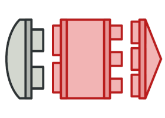

Patrones estructurales
Los patrones estructurales explican cómo ensamblar objetos y clases en estructuras más grandes, a la vez que se mantiene la flexibilidad y eficiencia de estas estructuras.

Adapter
Permite la colaboración entre objetos con interfaces incompatibles.

Bridge
Permite dividir una clase grande o un grupo de clases estrechamente relacionadas, en dos jerarquías separadas (abstracción e implementación) que pueden desarrollarse independientemente la una de la otra.